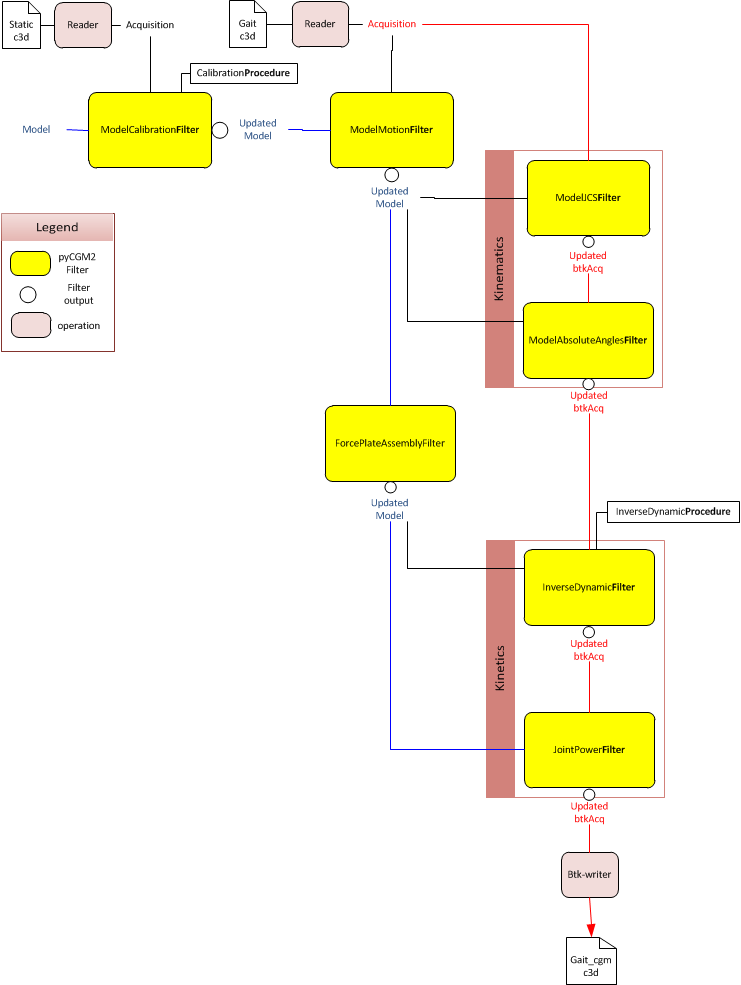
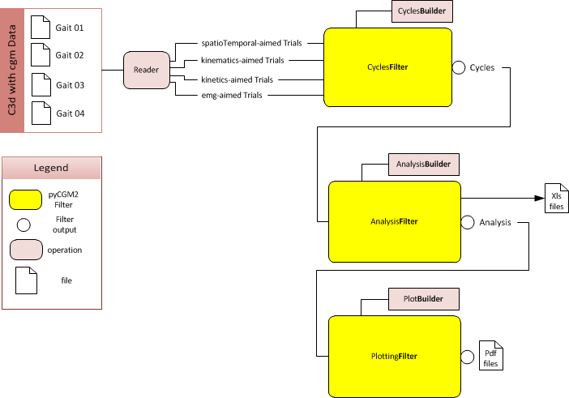

PyCGM2 uses pipeline programming concepts. A FILTER collects inputs (c3d acquisition, model, ...) for performing a concrete operation, like computing joint angles or gererating plot panels.
Following workflows present examples articulating the different main filters in the context of gait analysis.
Goal : Calculation of kinematics and kinetics of the CGM and store data in the c3d.
Preliminary task is to call a pyCGM2 model. Through Filters Calibration and Motion successively, segment coordinate systems are build and their motion parametrized by rotation matrix. Afterward, a series of Filters update the gait c3d with kinematic and kinetic data.
For any details about Model Filters and their options , see details in Model Filters
Goal : Handle multi-acquisition with CGM data. Perform gait normalisation and generates both spreadsheet and plot panels.
Standard interpration of gait data relies on the concept of gait cycle.
To this end, a c3d set feed the first filter cycleFilter which calls a CycleBuilder (ex: GaitCycleBuilder) and eventually creates an instance of the pyCGM2 object : Cycles (see Cycle Built object).
Cycles instance is inputed in the Filter AnalysisFilter in order to get descriptive statistics of data. An AnalysisBuilder informs the filter of the type of analysis to perform. In return of AnalysisFilter, an instance of the pyCGM2 object : Analysis (see Analysis built object).
AnalysisFilter include method for exporting xls spreadsheets.
The last filter PlottingFilter generates pdf plot panels from plotBuilder (ex:GaitAnalysisPlotBuilder )
see details about Filters in

Designing as replication of the native vicon CGM, pyCGM2 keeps Vicon nomenclature. Therefore, point labels will be the following :
| Angles | Force | Moment | Power |
|---|---|---|---|
| LPelvisAngles | |||
| RPelvisAngles | |||
| LHipAngles | LHipForce | LHipMoment | LHipPower |
| RHipAngles | RHipForce | RHipMoment | RHipPower |
| LKneeAngles | LKneeForce | LKneeMoment | RKneePower |
| RKneeAngles | RKneeForce | RKneeMoment | RKneePower |
| LAnkleAngles | LAnkleForce | LAnkleMoment | RAnklePower |
| RAnkleAngles | RAnkleForce | RAnkleMoment | RAnklePower |
| LFootProgress | |||
| RFootProgress |